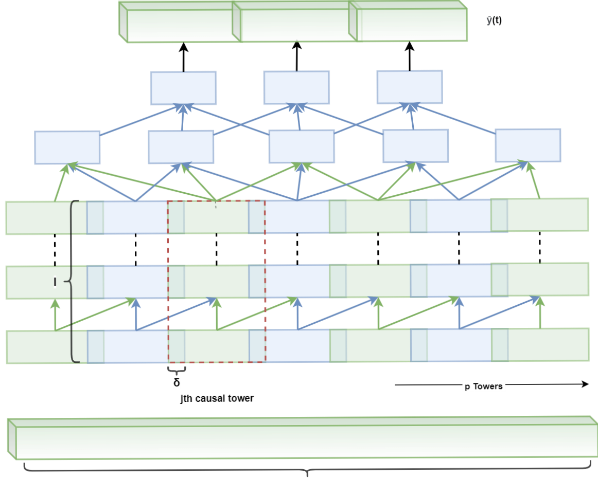
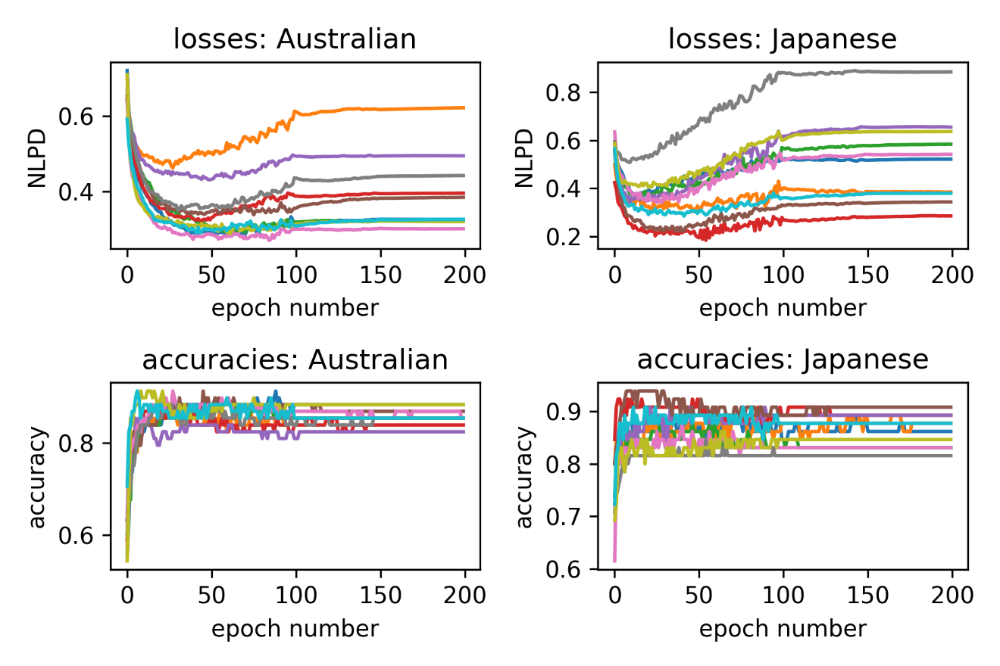
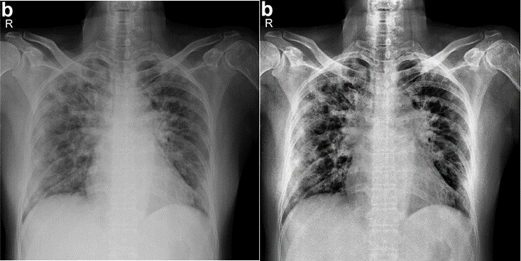
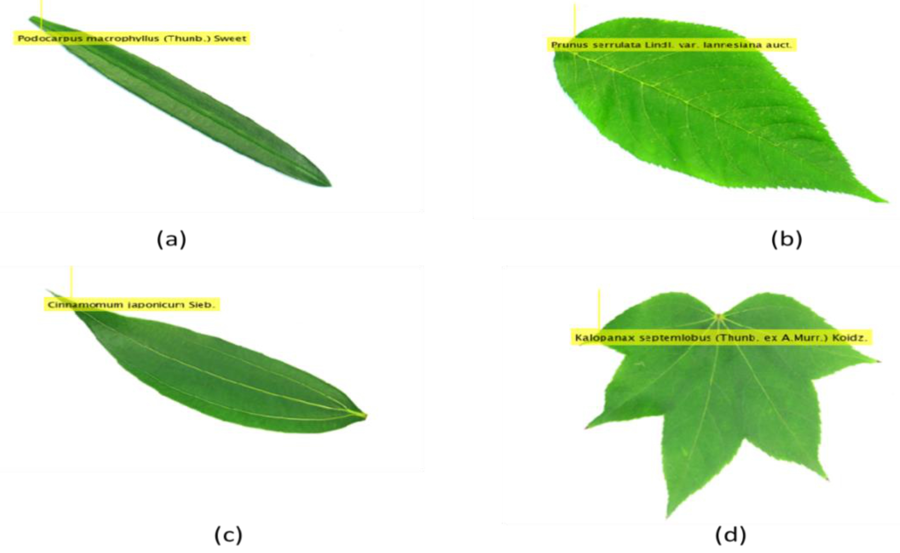

|
iril@aan.hayay.maockgmsa
|
Hi! I am Akshay (Ak-sh-ae), senior Engineering (EE) undergraduate at Shri Mata Vaishno Devi University, where I am being advised by Dr. Amit Kant Pandit towards several projects in Machine Learning and Deep Learning.
Within Machine Learning and Signal Processing, I am interested in making neural decisions explainable, reliable, fair and robust. I aim to make this possible by exploiting the insights from studies towards tasks in multi-modality. My opinion stands with better understanding of systems trained using multi-modal analysis. Recently, I have also started exploring Manifold Learning and Topology in ML.
I broadly work on theoretical and analytical deep learning with focus on but not limited to the following domains:
- Adversarial Robustness
- Measure Theory
- Interpretable ML
- ML with Signal Processing
Currently, I am working in MADHAV Lab at the Indian Institute of Technology, Kanpur (IIT-K) led by Dr. Vipul Arora on Speech Generation. Before this, I completed a project on Time Delay Estimation in Audio Signals, a preprint of which can be accessed here.
Previously, I have spent time at the Power Grid Corporation of India Limited (PGCIL) Northern Region-2 and worked towards acquisition, cleaning and processing of data on temporal flow of Electric Power in the region. A Machine Learning based forecasting model is in preparation for potential publication.
CV /
Google Scholar /
GitHub /
Twitter /
LinkedIn
|
|
 |
SyncNet: Using Causal Convolutions and Correlating Objective for Time Delay Estimation in Audio Signals
Akshay Raina and Vipul Arora
arXiv, 2022
project /
paper /
abstract /
bibtex
This paper addresses the task of performing robust and reliable time-delay estimation in audio-signals
in noisy and reverberating environments. Such an estimator has applications in various sectors inclding
3D sound systems, robotics, communication systems, music perception, etc. This study proposes a Semi-Causal
Convolutional Neural Network (SCCNN) consisting of a set of causal and anti-causal layers in sequence,
with a novel Correlation-based objective function for estimating temporal delays. The causality in the
network ensures non-leakage of representations from future time-intervals and the proposed loss function
makes the network generate sequences with high correlation at the actual time delay. The proposed approach
is also intrinsically interpretable as it does not lose time information. Even a shallow convolution
network is able to capture local patterns in sequences, while also correlating them globally. SyncNet
outperforms other classical approaches in estimating mutual time delays for different types of audio signals
including pulse, speech and musical beats.
@misc{https://doi.org/10.48550/arxiv.2203.14639,
doi = {10.48550/ARXIV.2203.14639},
url = {https://arxiv.org/abs/2203.14639},
author = {Raina, Akshay and Arora, Vipul},
keywords = {Audio and Speech Processing (eess.AS), Signal Processing (eess.SP), FOS: Electrical engineering, electronic engineering, information engineering, FOS: Electrical engineering, electronic engineering, information engineering},
title = {SyncNet: Using Causal Convolutions and Correlating Objective for Time Delay Estimation in Audio Signals},
publisher = {arXiv},
year = {2022},
copyright = {Creative Commons Attribution 4.0 International}
}
|
 |
A Gaussian Process- based approach towards Credit Risk Modelling using Stationary Activations
Shubham Mahajan*,
Anand Nayyar,
Akshay Raina*,
Samreen J Singh,
Ashutosh Vashishtha and
Amit Kant Pandit*
Concurrency and Computation: Practice and Experience (CCPE), Wiley, Oct 2021
article /
pdf /
abstract /
bibtex
The task of predicting the risk of defaulting of a lender using tools in the domain of AI is an emerging one and in growing demand, given the revolutionary potential of AI. Various attributes like income, properties acquired, educational status, and many other socioeconomic factors can be used to train a model to predict the possibilities of nonrepayment of a loan or its chances. Most of the techniques and algorithms used in this regard previously do not submit any attention to the uncertainty in predictions for out of distribution (OOD) in a dataset, which contributes to overfitting, leading to relatively lower accuracy for predicting these data points. Specifically, for credit risk classification, this is a serious concern, given the structure of the available datasets and the trend they follow. With a focus on this issue, we propose a robust and better methodology that uses a recent and efficient family of nonlinear neural network activation functions, which mimics the properties induced by the widely-used Matérn family of kernels in Gaussian process (GP) models. We tested the classification performance metrics on three openly available datasets after prior preprocessing. We achieved a high mean classification accuracy of 87.4% and a lower mean negative log predictive density loss of 0.405.
@article{mahajan2021gaussian,
title={A Gaussian process-based approach toward credit risk modeling using stationary activations},
author={Mahajan, Shubham and Nayyar, Anand and Raina, Akshay and Singh, Samreen J and Vashishtha, Ashutosh and Pandit, Amit Kant},
journal={Concurrency and Computation: Practice and Experience},
pages={e6692},
year={2021},
publisher={Wiley Online Library}
}
|
 |
CoVID- 19 Detection from Chest X-Ray images using advanced deep learning techniques
Shubham Mahajan*,
Akshay Raina,
Mohamed Abouhawwash,
Xiao Zhi Gao and
Amit Kant Pandit
Computers, Materials & Continua (CMC), Sep 2021
article /
pdf/
abstract /
bibtex
Like the Covid-19 pandemic, smallpox virus infection broke out in the last century, wherein 500 million deaths were reported along with enormous economic loss. But unlike smallpox, the Covid-19 recorded a low exponential infection rate and mortality rate due to advancement in medical aid and diagnostics. Data analytics, machine learning, and automation techniques can help in early diagnostics and supporting treatments of many reported patients. This paper proposes a robust and efficient methodology for the early detection of COVID-19 from Chest X-Ray scans utilizing enhanced deep learning techniques. Our study suggests that using the Prediction and Deconvolutional Modules in combination with the SSD architecture can improve the performance of the model trained at this task. We used a publicly open CXR image dataset and implemented the detection model with task-specific pre-processing and near 80:20 split. This achieved a competitive specificity of 0.9474 and a sensibility/accuracy of 0.9597, which shall help better decision-making for various aspects of identification and treat the infection.
@article{mahajan2021covid,
title={Covid-19 detection from chest X-Ray images using advanced deep learning techniques},
author={Mahajan, Shubham and Raina, Akshay and Abouhawwash, Mohamed and Gao, Xiao-Zhi and Pandit, Amit Kant},
journal={Computers, Materials and Continua},
pages={1541--1556},
year={2021}
}

|
 |
Plant Species Recognition using Morphological Feature extraction and Transfer Learning over SVM and ADABOOST
Shubham Mahajan*,
Akshay Raina,
Xiao Zhi Gao and
Amit Kant Pandit
Multidisciplinary Digital Publishing Institute (MDPI)- Symmetry, Feb 2021
paper /
pdf/
abstract /
bibtex
Plant species recognition from visual data has always been a challenging task for Artificial Intelligence (AI) researchers, due to a number of complications in the task, such as the enormous data to be processed due to vast number of floral species. There are many sources from a plant that can be used as feature aspects for an AI-based model, but features related to parts like leaves are considered as more significant for the task, primarily due to easy accessibility, than other parts like flowers, stems, etc. With this notion, we propose a plant species recognition model based on morphological features extracted from corresponding leaves’ images using the support vector machine (SVM) with adaptive boosting technique. This proposed framework includes the pre-processing, extraction of features and classification into one of the species. Various morphological features like centroid, major axis length, minor axis length, solidity, perimeter, and orientation are extracted from the digital images of various categories of leaves. In addition to this, transfer learning, as suggested by some previous studies, has also been used in the feature extraction process. Various classifiers like the kNN, decision trees, and multilayer perceptron (with and without AdaBoost) are employed on the opensource dataset, FLAVIA, to certify our study in its robustness, in contrast to other classifier frameworks. With this, our study also signifies the additional advantage of 10-fold cross validation over other dataset partitioning strategies, thereby achieving a precision rate of 95.85%.
@article{mahajan2021plant,
title={Plant recognition using morphological feature extraction and transfer learning over SVM and AdaBoost},
author={Mahajan, Shubham and Raina, Akshay and Gao, Xiao-Zhi and Kant Pandit, Amit},
journal={Symmetry},
volume={13},
number={2},
pages={356},
year={2021},
publisher={Multidisciplinary Digital Publishing Institute}
}
|
Internships and Exchange Programs
|
Winter InternJan. 2021 - March 2021
Power Grid Corporation of India Limited (PGCIL)
During the internship, I was involved with exploring the management pipeline of PGCIL for fair and uninterrupted power flow in the region. I acquired data on same on-site and applied several cleaning/processing techniques to use for some ML-based forecasting algorithm.
On-Site (Northern Region-2)
|
|
Sumnmer Research InternMay. 2020 - July 2020
Shri Mata Vaishno Devi University (SMVDU)
During the internship, I worked on CoVID-19 Detection using Chest X-Ray images. For this, I studied several papers, replicated the results using MATLAB on AWS EC2 instances.
Remote
|
|
|


{kind=link}